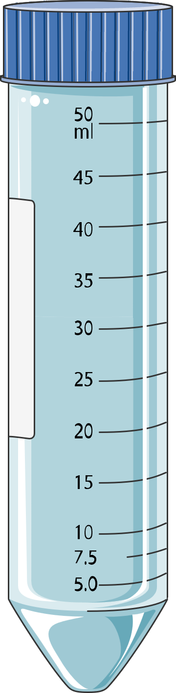
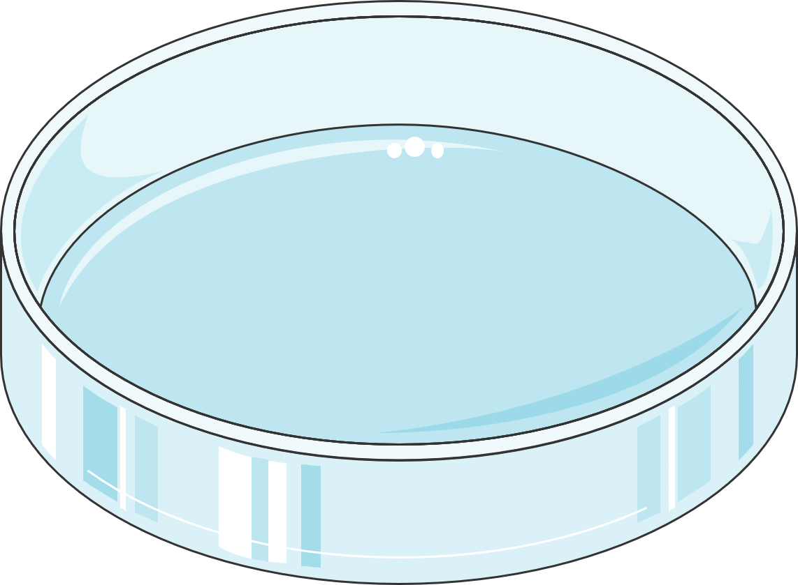

event_note 實驗日期與基本資訊 (Experimental Overview)
format_list_numbered 操作流程 (Experimental Procedures)
colorize 一、S. mutans 681 菌體色素萃取前置增菌培養 (Pigment Extraction – Part 1)
- 初始菌液吸光值確認：以分光光度計測定 S. mutans 681 初始種菌液之 $OD_{600}$，確認吸光值介於 0.4 – 0.6 之間（對數生長期中期）。
- 按 1% (v/v) 比例繼代接種：準備 40 mL 之 BHI + 1% (w/v) Sucrose 培養液，加入 400 μL 初始菌液（$40\text{ mL} \times 1\% = 0.4\text{ mL} = 400\ \mu\text{L}$）混勻。
- 隔夜增菌培養：置入 37 °C 恆溫培養箱進行隔夜靜置培養（Overnight incubation）。

biotech 二、S. mutans UA159 菌液活化製備 (Broth Preparation for Antioxidant Assay)
- 分裝培養基：於無菌離心管（Falcon conical tube）中加入 15 mL BHI broth（作為後續測試添加萃取色素後抗氧化能力之前置菌液）。
- 挑取單一菌落：取 S. mutans UA159 瓊脂平板（Agar plate），以無菌接種環（Inoculating loop）刮取 3–8 個菌落（刮取區域總長約 $\ge 1\text{ cm}$）。
- 懸浮與震盪混勻：將接種環浸入含 15 mL BHI broth 之離心管液面下，貼緊管壁輕柔摩擦將菌落團塊壓碎分散，隨後以漩渦震盪器（Vortex mixer）充分混勻。
- 隔夜活化培養：將離心管置入 37 °C 恆溫培養箱隔夜培養（Overnight incubation）。

ac_unit 三、S. mutans UA159 甘油冷凍保種管製備 (Glycerol Stock Preparation – Part 1)
- 菌液培養：同上述步驟二之操作流程，先行製備 15 mL 之 S. mutans UA159 隔夜活化菌液。
- 離心收集菌體（Harvesting）：將 15 mL 菌液於 23 °C、4,000 rpm（約 $2,500\text{--}3,000 \times g$）離心 10 min，小心傾倒棄去上清液（Supernatant），保留管底菌體沉澱（Bacterial pellet）。
- 抗凍液重懸（Resuspension）：於菌體沉澱中加入 3 mL 無菌抗凍保存液（BHI broth : Glycerol = 4 : 1 v/v，即含 20% Glycerol），輕柔吹吸或震盪使菌體完全懸浮。
- 分裝與超低溫凍存：將 3 mL 菌懸液平均分裝至 3–4 支無菌冷凍小管（Cryovials，每管約 0.75–1.0 mL），標示菌株與日期後移置 −80 °C 超低溫冷凍櫃長期保存。
table_chart 實驗數據：H2O2 濃度梯度耐受性時間序列吸光值測定 (Time-Course Assay Data)
異常事件與重測紀錄（Incident & Repeat Log）：
2026/09/30 執行之初版實驗因發生微生物污染（Contamination）導致數據無效並予以廢棄；下表所列為 2026/10/01 重新執行（Repeat assay）之時間序列三重複（Triplicates, $n=3$）測定結果（10:00 至 16:00，每小時測定一次）。
| 測定時間 (Time) | 重複組別 (Replicate) | 2 mM H2O2 | 1 mM H2O2 | 0.5 mM H2O2 | 0.25 mM H2O2 | 0 mM H2O2 (空白對照) |
|---|---|---|---|---|---|---|
| 10:00 | Rep 1 | 0.029 | 0.030 | 0.035 | 0.027 | 0.026 |
| Rep 2 | 0.040 | 0.028 | 0.033 | 0.026 | 0.028 | |
| Rep 3 | 0.033 | 0.028 | 0.031 | 0.029 | 0.029 | |
| Mean ± SD | 0.034 ± 0.006 | 0.029 ± 0.001 | 0.033 ± 0.002 | 0.027 ± 0.002 | 0.028 ± 0.002 | |
| 11:00 | Rep 1 | 0.028 | 0.032 | 0.035 | 0.029 | 0.031 |
| Rep 2 | 0.038 | 0.030 | 0.038 | 0.026 | 0.035 | |
| Rep 3 | 0.030 | 0.040 | 0.041 | 0.035 | 0.036 | |
| Mean ± SD | 0.032 ± 0.005 | 0.034 ± 0.005 | 0.038 ± 0.003 | 0.030 ± 0.005 | 0.034 ± 0.003 | |
| 12:00 | Rep 1 | 0.030 | 0.038 | 0.063 | 0.041 | 0.043 |
| Rep 2 | 0.036 | 0.036 | 0.045 | 0.031 | 0.043 | |
| Rep 3 | 0.034 | 0.041 | 0.051 | 0.036 | 0.042 | |
| Mean ± SD | 0.033 ± 0.003 | 0.038 ± 0.003 | 0.053 ± 0.009 | 0.036 ± 0.005 | 0.043 ± 0.001 | |
| 13:00 | Rep 1 | 0.032 | 0.037 | 0.063 | 0.043 | 0.053 |
| Rep 2 | 0.046 | 0.035 | 0.044 | 0.041 | 0.048 | |
| Rep 3 | 0.034 | 0.040 | 0.049 | 0.053 | 0.057 | |
| Mean ± SD | 0.037 ± 0.008 | 0.037 ± 0.003 | 0.052 ± 0.010 | 0.046 ± 0.006 | 0.053 ± 0.005 | |
| 14:00 | Rep 1 | 0.024 | 0.031 | 0.068 | 0.067 | 0.086 |
| Rep 2 | 0.044 | 0.031 | 0.068 | 0.062 | 0.085 | |
| Rep 3 | 0.038 | 0.029 | 0.064 | 0.067 | 0.071 | |
| Mean ± SD | 0.035 ± 0.010 | 0.030 ± 0.001 | 0.067 ± 0.002 | 0.065 ± 0.003 | 0.081 ± 0.008 | |
| 15:00 | Rep 1 | 0.037 | 0.051 | 0.085 | 0.077 | 0.091 |
| Rep 2 | 0.044 | 0.052 | 0.069 | 0.079 | 0.098 | |
| Rep 3 | 0.041 | 0.062 | 0.089 | 0.073 | 0.088 | |
| Mean ± SD | 0.041 ± 0.004 | 0.055 ± 0.006 | 0.081 ± 0.011 | 0.076 ± 0.003 | 0.092 ± 0.005 | |
| 16:00 | Rep 1 | 0.043 | 0.077 | 0.115 | 0.116 | 0.134 |
| Rep 2 | 0.062 | 0.076 | 0.107 | 0.117 | 0.147 | |
| Rep 3 | 0.053 | 0.081 | 0.121 | 0.123 | 0.139 | |
| Mean ± SD | 0.053 ± 0.010 | 0.078 ± 0.003 | 0.114 ± 0.007 | 0.119 ± 0.004 | 0.140 ± 0.007 |
analytics 結論與數據分析 (Conclusion & Discussion)
- 劑量依賴性生長抑制（Dose-dependent inhibition）：由 2026-10-01 重測之 6 小時追蹤數據（10:00–16:00）可見，0 mM 空白對照組吸光值平均值由 $0.028 \pm 0.002$ 穩定上升至 $0.140 \pm 0.007$；隨 $\text{H}_2\text{O}_2$ 濃度升高，細菌增殖速率呈現明顯之劑量依賴性抑制趨勢。
- 亞致死濃度表現（0.25 mM 與 0.5 mM）：在 0.25 mM 與 0.5 mM $\text{H}_2\text{O}_2$ 條件下，14:00 後菌體開始進入顯著生長期，至 16:00 平均吸光值分別達 $0.119 \pm 0.004$ 與 $0.114 \pm 0.007$，顯示細菌對 $\le 0.5\text{ mM}$ 氧化壓力具備一定適應與耐受能力。
- 高濃度抑制效應（1 mM 與 2 mM）：1 mM 組遲至 15:00–16:00 才出現緩慢生長（16:00 平均為 $0.078 \pm 0.003$），而 2 mM 組於 6 小時內吸光值僅微幅變動（10:00 為 $0.034 \pm 0.006$，16:00 為 $0.053 \pm 0.010$），顯示 2 mM $\text{H}_2\text{O}_2$ 對菌體生長具有強烈抑制效果。